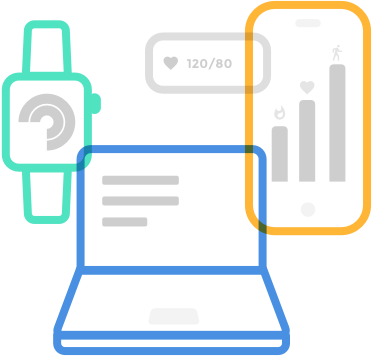

Open DBDP
Open DBDP is a partnership between Open mHealth and the Digital Biomarker Discovery Pipeline (DBDP). Combining Open mHealth's interoperable open data standard with the DBDP's platform for transforming that data into indicators of health outcomes will help accelerate research using mHealth and wearables data for digital biomarker discovery. This project is funded through the Chan Zuckerberg Initiative DAF, an advised fund of Silicon Valley Community Foundation. Click on the logos below to learn more about each initiative.

Open DBDP
We have multiple points of entry for anyone interested in accelerating research using mHealth and wearables data for digital biomarker discovery.
The Open DBDP Team
We are a dynamic team passionate about accelerating research using mHealth and wearables data for digital biomarker discovery.

Jessilyn Dunn, PhD
Open DBDP Co-founder
Jessilyn Dunn is a co-founder of Open DBDP and the founder of the DBDP. She is the PI of the Big Ideas Lab at Duke University and is an Assistant Professor in the Biomedical Engineering and Biostatistics & Bioinformatics Departments. She received her PhD from Georgia Tech.

Brinnae Bent, PhD
DBDP Lead Developer
Brinnae Bent is the lead developer of the DBDP. She is currently finishing a PhD in the Big Ideas Lab at Duke University in developing digital biomarkers of glycemic health. She reveived her BS from NC State University and MS from Duke University.